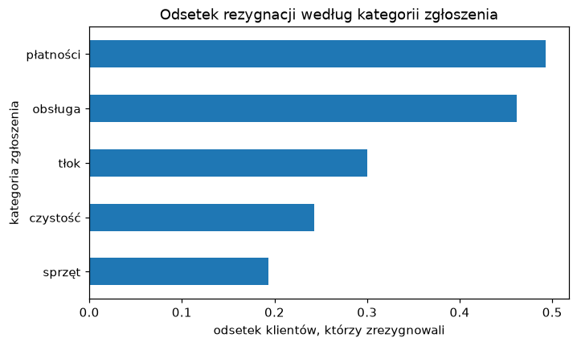

Zajęcia 4#
Grupowanie i łączenie danych#
Na poprzednich zajęciach odsetek rezygnacji dla każdego typu karnetu liczyliśmy tabelą krzyżową i obiecaliśmy, że da się prościej. Da się — i to jest pierwsza połowa dzisiejszych zajęć: grupowanie, czyli liczenie czegokolwiek osobno dla każdej grupy. Średnia w każdym mieście, mediana w każdym karnecie, liczba klientów w każdej kombinacji jednego i drugiego.
Druga połowa wynika z prostego faktu: w prawdziwej firmie dane prawie nigdy nie leżą w jednej tabeli. Klienci są w jednym systemie, zgłoszenia w drugim, kluby w trzecim. Żeby cokolwiek z nimi zrobić, trzeba je najpierw połączyć po wspólnej kolumnie — i nie zgubić ani nie rozmnożyć przy tym połowy wierszy.
Po dzisiejszych zajęciach będziesz w stanie:
- policzyć statystykę w grupach
groupbyi wyjaśnić schemat „podziel — policz — złóż", - policzyć kilka statystyk naraz
aggi nadać wynikom czytelne nazwy, - pogrupować dane po dwóch kolumnach i rozłożyć wynik w tabelę
unstack, - połączyć dwie tabele
mergei dobrać rodzaj złączenia (left,inner,right,outer), - połączyć tabelę klientów z tabelą zdarzeń: najpierw
groupby, potemmerge, i sprawdzić, czy liczba wierszy się zgadza.
Przykłady z zajęć w Colabie
Cały materiał z tej strony jest też w gotowym notatniku — z kodem do uruchomienia. Otwórz go i uruchamiaj komórki po kolei, czytając materiał. Żeby zachować swoje zmiany, zapisz kopię: Plik → Zapisz kopię na Dysku.

Gdzie jesteśmy
W workflow projektu z pierwszych zajęć to wciąż przygotowanie danych — zbieranie ich z kilku źródeł w jedną tabelę, z którą da się pracować. Ćwiczymy na siłowni, w zadaniu wracamy do MeritoBanku. Za godzinę na Uczeniu głębokim dane kredytowe trafią do pierwszego sztucznego neuronu.
Plan na dziś#
| Blok | Czas |
|---|---|
Podziel — policz — złóż: pierwszy groupby |
10 min |
| Kilka statystyk naraz i grupowanie po dwóch kolumnach | 12 min |
Dane w kilku tabelach — merge |
12 min |
Jeden-do-wielu: najpierw groupby, potem merge |
8 min |
| Ściągawka | 3 min |
| Zadanie 4 | 45 min |
Grupowanie#
Dane, na których pracujemy#
Znowu siłownia — ta sama wyczyszczona wersja co na zajęciach 3:
import pandas as pd
URL = "https://kubzal.github.io/wsb-merito/semestr_zimowy_2026_27/uczenie_glebokie/dane/silownia_czyste.csv"
df = pd.read_csv(URL)
df.head()
klient_id wiek miasto typ_karnetu oplata_mies staz_mies wizyty_mies zgloszenia zrezygnowal
0 K1342 45 Gdańsk Basic 99.0 20 1.2 0 1
1 K0802 34 Poznań Standard 119.0 17 7.6 1 0
2 K0240 34 Warszawa Basic 99.0 5 5.1 1 0
3 K0144 46 Poznań Basic 99.0 52 2.4 0 0
4 K0619 48 Wrocław Basic 99.0 52 6.1 1 0
Podziel — policz — złóż#
Pytanie z poprzednich zajęć: jaki jest odsetek rezygnacji w każdym typie
karnetu? Z groupby to jedna linijka:
Te same liczby co w kolumnie 1 tabeli krzyżowej z zajęć 3. Czyta się to od
lewej do prawej, dokładnie w kolejności, w jakiej pandas wykonuje pracę:
df.groupby("typ_karnetu") ["zrezygnowal"] .mean()
PODZIEL na której kolumnie POLICZ → ZŁÓŻ w jedną tabelę
Basic → 635 klientów → 1, 0, 0, 0, 1, … → średnia 0.191 ┐
Premium → 309 klientów → 0, 1, 1, 0, 0, … → średnia 0.337 ├→ wynik
Standard → 540 klientów → 0, 0, 1, 0, 0, … → średnia 0.230 ┘
Ten schemat (split — apply — combine) jest wszędzie: tabele przestawne
w Excelu, GROUP BY w SQL, raporty w każdej firmie. Zmieniasz tylko kolumnę
grupującą, kolumnę liczoną i statystykę:
miasto
Gdańsk 5.70
Kraków 6.05
Poznań 6.10
Warszawa 5.90
Wrocław 5.30
Name: wizyty_mies, dtype: float64
Zamiast mean i median możesz użyć każdej statystyki, którą znasz:
sum, min, max, std, count. Jedna jest szczególna — ile wierszy jest
w każdej grupie — i nie potrzebuje kolumny:
To samo co df["miasto"].value_counts(), tylko posortowane alfabetycznie,
a nie od największej grupy.
Wynik grupowania to zwykła seria#
Wynik groupby to seria (albo DataFrame), więc działa na nim wszystko, co już
znasz — sortowanie, zaokrąglanie, wykresy:
miasto
Warszawa 0.254
Wrocław 0.251
Kraków 0.245
Gdańsk 0.209
Poznań 0.181
Name: zrezygnowal, dtype: float64
Poznań trzyma klientów najlepiej, Warszawa — najgorzej. Nazwy miast trafiły do
indeksu (to te pogrubione etykiety po lewej). Jeśli wolisz je mieć w zwykłej
kolumnie — np. żeby potem połączyć tabelę z inną — dopisz .reset_index().
Kilka statystyk naraz#
agg — raport w jednej tabeli#
Zwykle chcesz o każdej grupie wiedzieć kilka rzeczy jednocześnie. Do tego służy
agg z nazwanymi agregacjami — każda linijka to
nazwa_w_wyniku=("kolumna", "statystyka"):
raport = df.groupby("typ_karnetu").agg(
klienci=("klient_id", "count"),
odsetek_rezygnacji=("zrezygnowal", "mean"),
srednia_oplata=("oplata_mies", "mean"),
mediana_wizyt=("wizyty_mies", "median"),
)
raport.round(2)
klienci odsetek_rezygnacji srednia_oplata mediana_wizyt
typ_karnetu
Basic 635 0.19 94.80 6.1
Premium 309 0.34 195.57 5.8
Standard 540 0.23 135.17 5.6
Jedna tabela, którą można wkleić do raportu. Kolumna klienci jest tu nie bez
powodu — o tym za chwilę.
Grupowanie po dwóch kolumnach#
Czy Premium jest problemem w każdym mieście, czy tylko w niektórych? Podajemy listę kolumn grupujących:
miasto typ_karnetu
Gdańsk Basic 0.14
Premium 0.31
Standard 0.20
Kraków Basic 0.19
...
Wrocław Basic 0.19
Premium 0.43
Standard 0.25
Name: zrezygnowal, dtype: float64
Wyszło 15 wierszy w długiej kolumnie — mało czytelne. unstack() przenosi
drugi poziom grupowania do kolumn i robi z wyniku tabelę:
typ_karnetu Basic Premium Standard
miasto
Gdańsk 0.14 0.31 0.20
Kraków 0.19 0.34 0.24
Poznań 0.18 0.17 0.18
Warszawa 0.21 0.37 0.25
Wrocław 0.19 0.43 0.25
Ciekawe: w Poznaniu Premium wcale nie odstaje (0.17), a we Wrocławiu odchodzi prawie co drugi klient Premium (0.43). Zanim jednak ogłosisz to zarządowi, sprawdź, ilu klientów stoi za każdą liczbą:
typ_karnetu Basic Premium Standard
miasto
Gdańsk 71 55 89
Kraków 111 67 112
Poznań 98 35 71
Warszawa 252 117 195
Wrocław 103 35 73
Obie skrajne wartości — 0.17 w Poznaniu i 0.43 we Wrocławiu — policzone są z 35 osób. Pięciu klientów więcej albo mniej i odsetek przesuwa się o 14 punktów procentowych. To może być prawdziwa różnica, a może przypadek.
Mała grupa, duże liczby
Im mniejsza grupa, tym bardziej skrajne wyniki. Odsetek 100% z dwóch osób
nie znaczy nic. Dlatego do każdej średniej czy odsetka w grupach dokładaj
liczebność grupy — choćby jako klienci=("klient_id", "count") w agg.
Grupy poniżej kilkudziesięciu obserwacji opisuj ostrożnie.
Grupowanie po przedziałach#
Kolumny liczbowej o wielu wartościach (np. staż w miesiącach) nie grupuje się
bezpośrednio — wyszłoby 60 grup po kilkanaście osób. Najpierw tniesz ją na
przedziały pd.cut, a potem grupujesz po przedziałach. agg z listą nazw
statystyk to krótsza wersja, gdy nie potrzebujesz własnych nazw kolumn:
przedzialy = pd.cut(df["staz_mies"], bins=[0, 6, 12, 24, 60])
df.groupby(przedzialy, observed=True)["zrezygnowal"].agg(["count", "mean"]).round(3)
Prawie 40% nowych klientów odchodzi w pierwszym półroczu, a z tych, którzy
wytrwali dwa lata — tylko 17%. (0, 6] czytaj „powyżej 0, do 6 włącznie".
observed=True każe pokazać tylko przedziały, w których ktoś jest.
Dane w kilku tabelach#
Słownik klubów#
Dział nieruchomości prowadzi własną tabelę — po jednym wierszu na klub:
URL_KLUBY = "https://kubzal.github.io/wsb-merito/semestr_zimowy_2026_27/data_science_w_pythonie/dane/kluby_2026.csv"
kluby = pd.read_csv(URL_KLUBY)
kluby
miasto klub rok_otwarcia metraz_m2 otwarty_24h
0 Warszawa Merito Fit Centrum 2018 1800 tak
1 Kraków Merito Fit Kazimierz 2020 1100 nie
2 Gdańsk Merito Fit Oliwa 2021 900 tak
3 Wrocław Merito Fit Rynek 2019 1000 nie
4 Poznań Merito Fit Jeżyce 2022 750 nie
5 Łódź Merito Fit Manufaktura 2026 1200 tak
Obie tabele mają kolumnę miasto — to jest klucz, po którym je połączymy.
Każdy klient ma jedno miasto, każde miasto ma jeden klub, więc każdemu
klientowi dopisujemy informacje o jego klubie:
pelne = df.merge(kluby, on="miasto", how="left")
print(df.shape, "→", pelne.shape)
pelne[["klient_id", "miasto", "klub", "otwarty_24h"]].head(3)
(1484, 9) → (1484, 13)
klient_id miasto klub otwarty_24h
0 K1342 Gdańsk Merito Fit Oliwa tak
1 K0802 Poznań Merito Fit Jeżyce nie
2 K0240 Warszawa Merito Fit Centrum tak
Wierszy tyle samo, kolumn o cztery więcej — dokładnie to, czego chcieliśmy. Teraz można grupować po cechach klubu, których w tabeli klientów w ogóle nie było:
Kluby całodobowe nie przyciągają częściej i nie trzymają klientów lepiej. Brak różnicy to też wynik — dział nieruchomości właśnie się dowiedział, że dopłacanie do nocnych zmian nie przekłada się na lojalność.
Rodzaje złączeń#
Zwróć uwagę na Łódź. Klub otwarto w tym roku i nie ma jeszcze żadnego klienta
w naszej tabeli. Co się z nim stanie, zależy od parametru how:
how= |
Co zostaje | Tu |
|---|---|---|
"left" |
wszystkie wiersze z lewej tabeli (df); brakujące dane z prawej → NaN |
1484 — Łódź znika |
"inner" |
tylko wiersze, których klucz jest w obu tabelach | 1484 — Łódź znika |
"right" |
wszystkie wiersze z prawej tabeli (kluby) |
1485 — Łódź z NaN w danych klienta |
"outer" |
wszystko z obu tabel | 1485 |
Domyślnie merge robi inner. W praktyce najczęściej chcesz left: masz
główną tabelę (klientów, kredyty, zamówienia) i dokładasz do niej informacje
z innych tabel, nie gubiąc żadnego wiersza głównej. Tu left i inner
dały ten sam wynik, bo każde miasto klienta jest w słowniku klubów — ale to
szczęście, nie reguła.
Klucz nazywa się inaczej w każdej tabeli?
Gdy w jednej tabeli kolumna to miasto, a w drugiej lokalizacja, użyj
df.merge(kluby, left_on="miasto", right_on="lokalizacja", how="left").
A jeśli klucz to np. "Kraków" w jednej i "KRAKÓW " w drugiej — wracasz do
ujednolicania tekstu z zajęć 2. merge porównuje wartości co do znaku.
Jeden-do-wielu#
Dziennik zgłoszeń#
System obsługi klienta zapisuje każde zgłoszenie jako osobny wiersz:
URL_ZGL = "https://kubzal.github.io/wsb-merito/semestr_zimowy_2026_27/data_science_w_pythonie/dane/zgloszenia_2026.csv"
zgl = pd.read_csv(URL_ZGL)
print(zgl.shape)
zgl.head()
(1201, 4)
zgloszenie_id klient_id data kategoria
0 Z0001 K1115 2026-01-02 sprzęt
1 Z0002 K0249 2026-01-03 tłok
2 Z0003 K0367 2026-01-03 tłok
3 Z0004 K0446 2026-01-03 sprzęt
4 Z0005 K0564 2026-01-03 tłok
Tu relacja jest inna niż z klubami: jeden klient może mieć wiele zgłoszeń — albo żadnego. Co się stanie, jeśli połączymy tabele wprost?
Zamiast 1484 klientów mamy 1201 wierszy. Klient z trzema zgłoszeniami pojawił
się trzy razy, a 663 klientów bez zgłoszeń zniknęło (domyślne inner). Każda
średnia policzona na takiej tabeli będzie przekłamana — klienci, którzy dużo
narzekają, liczą się kilka razy.
Zawsze sprawdzaj shape przed i po merge
Jeśli łączysz tabelę klientów z czymkolwiek i liczba wierszy wzrosła, klucz w drugiej tabeli się powtarza. Jeśli spadła — część kluczy nie znalazła pary. Ani jedno, ani drugie nie wywoła błędu. pandas grzecznie zrobi to, o co go poprosiłeś, a przekłamany wynik zobaczysz dopiero w raporcie.
Najpierw groupby, potem merge#
Właściwa kolejność: najpierw streszczamy tabelę zdarzeń do jednego wiersza na klienta, a dopiero potem łączymy:
na_klienta = zgl.groupby("klient_id").size().reset_index(name="liczba_zgloszen")
print(na_klienta.shape)
na_klienta.head(3)
reset_index(name=...) zamienia indeks z identyfikatorami na zwykłą kolumnę
i nazywa kolumnę z wynikiem. Teraz łączymy — left, żeby nie zgubić klientów
bez zgłoszeń:
df2 = df.merge(na_klienta, on="klient_id", how="left")
print(df2.shape)
print("brak zgłoszeń (NaN):", df2["liczba_zgloszen"].isna().sum())
Klient, którego nie ma w dzienniku, dostał NaN. Ale tu brak znaczy coś
konkretnego — zero zgłoszeń — więc uzupełniamy zerem, nie medianą:
df2["liczba_zgloszen"] = df2["liczba_zgloszen"].fillna(0).astype(int)
print((df2["liczba_zgloszen"] == df2["zgloszenia"]).all())
Wynik zgadza się co do klienta z kolumną zgloszenia. Teraz już wiesz, skąd
ona się wzięła — ktoś przed Tobą zrobił dokładnie te trzy kroki.
Nowa informacja z tabeli zdarzeń#
Dziennik ma coś, czego w tabeli klientów nie było: kategorię zgłoszenia. Dopiszmy do każdego zgłoszenia informację, czy klient odszedł, i pogrupujmy po kategorii:
z = zgl.merge(df[["klient_id", "zrezygnowal"]], on="klient_id", how="left")
z.groupby("kategoria")["zrezygnowal"].agg(["count", "mean"]).sort_values("mean").round(3)
count mean
kategoria
sprzęt 305 0.193
czystość 268 0.243
tłok 283 0.300
obsługa 197 0.462
płatności 148 0.493
Tym razem lewą tabelą są zgłoszenia, więc 1201 wierszy to dokładnie to, czego chcemy — jeden wiersz na zgłoszenie. A wniosek jest konkretny: na sprzęt narzekają ci, którzy chodzą, a na obsługę i płatności — ci, którzy zaraz odejdą. Prawie połowa klientów ze zgłoszeniem o płatnościach zrezygnowała.
import matplotlib.pyplot as plt
z.groupby("kategoria")["zrezygnowal"].mean().sort_values().plot(
kind="barh", title="Odsetek rezygnacji według kategorii zgłoszenia")
plt.xlabel("odsetek klientów, którzy zrezygnowali")
plt.ylabel("kategoria zgłoszenia")

Gdyby ktoś zostawił tylko kolumnę zgloszenia z samą liczbą, tej informacji
by nie było. Dlatego dane zbiera się z tabel źródłowych, a nie tylko z gotowych
podsumowań.
A sklejanie tabel jedna pod drugą?
merge dokleja kolumny obok po kluczu. Czasem potrzebujesz czegoś
innego — np. masz zgłoszenia z każdego miesiąca w osobnym pliku i chcesz je
ułożyć jedno pod drugim. Do tego służy
pd.concat([styczen, luty, marzec], ignore_index=True). Tabele muszą mieć
te same kolumny.
Ściągawka#
| Chcę… | Kod |
|---|---|
| statystykę w grupach | df.groupby("grupa")["kol"].mean() |
| liczbę wierszy w grupach | df.groupby("grupa").size() |
| kilka statystyk z nazwami | df.groupby("grupa").agg(ile=("id", "count"), srednia=("kol", "mean")) |
| kilka statystyk bez nazw | df.groupby("grupa")["kol"].agg(["count", "mean"]) |
| grupować po dwóch kolumnach | df.groupby(["a", "b"])["kol"].mean() |
| rozłożyć wynik w tabelę | ... .unstack() |
| grupy z indeksu do kolumny | ... .reset_index() albo ... .reset_index(name="nazwa") |
| grupować po przedziałach | df.groupby(pd.cut(df["kol"], bins=[0, 6, 12, 60]), observed=True) |
| dołączyć kolumny z innej tabeli | df.merge(inna, on="klucz", how="left") |
| klucz o innej nazwie | df.merge(inna, left_on="a", right_on="b", how="left") |
| tabela zdarzeń → jeden wiersz na klienta | zdarzenia.groupby("klient_id").agg(...).reset_index() |
| brak zdarzeń = zero | df["kol"] = df["kol"].fillna(0) |
| sprawdzić, czy merge nic nie zepsuł | print(df.shape, wynik.shape) |
| skleić tabele jedna pod drugą | pd.concat([t1, t2], ignore_index=True) |
Zadanie 4 — Trzy systemy, jeden klient (6 pkt)#
Czas: maks. 45 minut
Środowisko: Google Colab
Oddanie: notatnik .ipynb na Moodle
Wracamy do MeritoBanku. Dane o kredytach już znasz — ale bank ma jeszcze dwa systemy, które nigdy ze sobą nie rozmawiały: system płatności (każda wpłacona rata to osobny wiersz) i CRM (oddział, segment klienta i to, skąd klient przyszedł). Dyrektorzy oddziałów chcą wiedzieć, jak wypadają na tle banku. Żeby im odpowiedzieć, trzeba najpierw złożyć trzy tabele w jedną.
Na początku notatnika wpisz swój numer albumu — od niego zależy, który oddział analizujesz w części 2:
NR_ALBUMU = 123456 # ← wpisz swój numer albumu
ODDZIALY = ["Warszawa", "Kraków", "Wrocław", "Poznań",
"Gdańsk", "Łódź", "Lublin", "Katowice"]
MOJ_ODDZIAL = ODDZIALY[NR_ALBUMU % 8]
print("Mój oddział:", MOJ_ODDZIAL)
URL_KREDYTY = "https://kubzal.github.io/wsb-merito/semestr_zimowy_2026_27/data_science_w_pythonie/dane/kredyty_2026.csv"
URL_SPLATY = "https://kubzal.github.io/wsb-merito/semestr_zimowy_2026_27/data_science_w_pythonie/dane/splaty_2026.csv"
URL_CRM = "https://kubzal.github.io/wsb-merito/semestr_zimowy_2026_27/data_science_w_pythonie/dane/klienci_crm_2026.csv"
Tabelę kredytów znasz z zajęć 3. Dwie nowe:
splaty_2026.csv |
Znaczenie |
|---|---|
klient_id |
identyfikator klienta |
miesiac |
miesiąc wpłaty (2026-01 … 2026-10) |
kwota_wplaty |
ile klient wpłacił w zł |
dni_opoznienia |
o ile dni po terminie przyszła wpłata (0 — w terminie) |
klienci_crm_2026.csv |
Znaczenie |
|---|---|
klient_id |
identyfikator klienta |
oddzial |
oddział, który prowadzi klienta |
segment |
standard albo premium |
kanal_pozyskania |
skąd przyszedł klient: oddział, internet albo pośrednik |
Rób części po kolei i pokaż mi wynik każdej części, gdy będzie gotowa.
Część 1 — grupowanie (ok. 20 min)#
- Wczytaj kredyty. Jedną tabelą
aggpolicz dla każdego celu kredytu: liczbę kredytów, odsetek niespłaconych i medianę kwoty kredytu. Posortuj od najbardziej ryzykownego celu. - Policz liczbę klientów i odsetek niespłaconych dla każdej wartości
inne_kredytyi narysuj odsetek jako wykres słupkowy. W komórce tekstowej odpowiedz: od ilu innych kredytów nie spłaca więcej niż połowa klientów? Czy wynikom dla 5 i 6 innych kredytów można ufać? - Policz odsetek niespłaconych w podziale na cel kredytu i to, czy klient miał w ostatnim roku jakiekolwiek opóźnienie — rozłożone w tabelę (cele w wierszach). Kto jest bardziej ryzykowny: klient z kredytem konsolidacyjnym bez opóźnień czy klient z kredytem gotówkowym z opóźnieniami?
Część 2 — łączenie (ok. 25 min)#
- Wczytaj spłaty i streść je do jednego wiersza na klienta: liczba wpłat, średnie opóźnienie i największe opóźnienie (w dniach).
- Dołącz do kredytów najpierw podsumowanie spłat, potem CRM — tak, żeby nie zgubić żadnego kredytu. Sprawdź, że wierszy jest nadal 2000. Ilu klientów nie ma w 2026 roku ani jednej wpłaty, a ilu brakuje w CRM? Uzupełnij brakującą liczbę wpłat zerem i sprawdź, czy klienci bez wpłat spłacają kredyt.
- Policz dla każdego oddziału liczbę klientów i odsetek niespłaconych kredytów i posortuj od najgorszego — na którym miejscu jest Twój oddział? Potem policz odsetek niespłaconych według kanału pozyskania w Twoim oddziale i w całym banku. W komórce tekstowej napisz 2–3 zdania do dyrektora Twojego oddziału.
Wskazówki#
- Agregacje z nazwami to przykład z sekcji „
agg— raport w jednej tabeli". Na odsetek niespłaconych wystarczy("niesplacony", "mean"). - Do sortowania po kolumnie wyniku:
.sort_values("odsetek", ascending=False). - „Czy miał jakiekolwiek opóźnienie" to
df["opoznienia_12m"] > 0— taką serięTrue/Falsemożesz podać dogroupbyzamiast nazwy kolumny:df.groupby(["cel_kredytu", df["opoznienia_12m"] > 0]). - W części 2 pamiętaj o
.reset_index()po grupowaniu spłat —mergełączy po kolumnieklient_id, a nie po indeksie. - „Nie zgubić żadnego kredytu" to
how="left", z kredytami po lewej stronie. - Braki po złączeniu:
df["oddzial"].isna().sum(). - Odsetek dla jednego oddziału: najpierw filtr
df[df["oddzial"] == MOJ_ODDZIAL], potemgroupby. Dla całego banku — to samo bez filtra. - Pisz do dyrektora jak do człowieka, nie do Pythona — bez nazw kolumn.
Punktacja (6 pkt)#
| Punkty | Za co |
|---|---|
| 6 pkt | obie części zrobione na zajęciach i pokazane prowadzącemu |
| 4 pkt | jedna z dwóch części zrobiona na zajęciach |
| 2 pkt | zadanie dokończone po zajęciach i wysłane na Moodle w terminie |
| 0 pkt | brak rozwiązania albo wysłane po terminie |
Termin przesłania na Moodle: dzień przed kolejnymi zajęciami.
Serio, róbcie to na zajęciach
Te same 45 minut pracy jest warte 6 pkt tu i teraz albo 2 pkt w domu. Przez cały semestr robi to różnicę 32 punktów, czyli całej oceny w górę lub w dół.